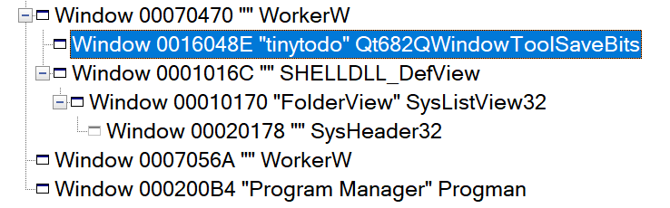

pyside6 开发
安装
pip install pyside6
打开pyside-designer
pyside6-designer
ui转python代码
pyside6-uic untitled.ui > widget.py
实例化ui
1 | class MainWindow(QMainWindow): |
创建托盘(创建菜单)
1 | # 创建系统托盘图标 |
窗口属性
- 窗口置底
1 | self.setWindowFlags(Qt.WindowStaysOnBottomHint) |
- 窗口无边框化
1 | self.setWindowFlags(Qt.FramelessWindowHint) |
- 隐藏任务栏图标
1 | self.setWindowFlags(Qt.Tool) |
动态插入子部件
1 | new_todo=Todo(self) |
背景窗口圆角
1 | def paintEvent(self, event): |
不设置遮罩将会出现四个黑角，反正通用框架基于系统的窗口管理器必定出现许多问题
QCharts
太杂了，不太好说
QSS
1 | QPushButton { |
弹出输入框
1 | # 创建一个 QInputDialog |
本文设置删除线
1 | def setStrike(self,ifstrikeout:bool): |
将窗口嵌入桌面
1 | def set_desktop_window(self): |
需要注意的是，嵌入桌面后，如果使用setStyleSheet(“background: transparent;”)，背景将会变为纯黑（windows，预估是windows窗口管理器搞的鬼）
如果setAttribute(Qt.WA_TranslucentBackground),窗口上的空间将不再发生变化（难蚌）
解决！！！1
2
3
4
5
6
7
8
9
10
11
12
13
14
15
16
17
18
19
20
21
22
23
24
25
26
27
28
29
30查找到program manager窗口的句柄
progman_hwnd = ctypes.windll.user32.FindWindowW("Progman", "Program Manager")
if not progman_hwnd:
print("Failed to find Progman window")
return
# 2. 发送 0x52C 消息，触发桌面窗口重新排列
ctypes.windll.user32.SendMessageW(progman_hwnd, 0x52C, 0, 0)
# 3. 查找 WorkerW 窗口
self.workerw_hwnd = ctypes.c_int(0)
def enum_windows_callback(hwnd, lParam):
# 查找 WorkerW 窗口
if ctypes.windll.user32.FindWindowExW(hwnd, None, "SHELLDLL_DefView", None):
# self.workerw_hwnd = ctypes.windll.user32.FindWindowExW(None, hwnd, "WorkerW", None)
self.workerw_hwnd=hwnd
return True
# 将 Python 回调函数转换为 C 回调函数
# 定义回调函数类型
WNDENUMPROC = ctypes.WINFUNCTYPE(ctypes.c_bool, ctypes.POINTER(ctypes.c_int), ctypes.POINTER(ctypes.c_int))
enum_windows_proc = WNDENUMPROC(enum_windows_callback)
# 枚举所有窗口
ctypes.windll.user32.EnumWindows(enum_windows_proc, 0)
if not self.workerw_hwnd:
print("Failed to find WorkerW window")
return
# 4. 将当前窗口设置为 WorkerW 的子窗口
win_hwnd = self.window.winId()
ctypes.windll.user32.SetParent(win_hwnd, self.workerw_hwnd)
# 5. 确保窗口可见
ctypes.windll.user32.ShowWindow(win_hwnd, 1) # SW_SHOWNORMAL
最根本的问题在于，有部分设备的program manager与worker是分离的，其中一个worker是管理桌面图标的，另一个worker是透明背景，而program manager是桌面总窗口。
如下的spy视图

我们之前是将我们的窗口加入program manager，这会造成worker的层级在我们窗口之上，我们的就被挡住了，现在我们先向program manager发送0x52c将program manager拆出workerw，此时将我们的窗口作为workerw的子窗口，注意，需要时包含shelldlldelview的workerw，否则也会被遮挡。如果想做桌面壁纸，那就将窗口作为另一个worker的子窗口。添柴！